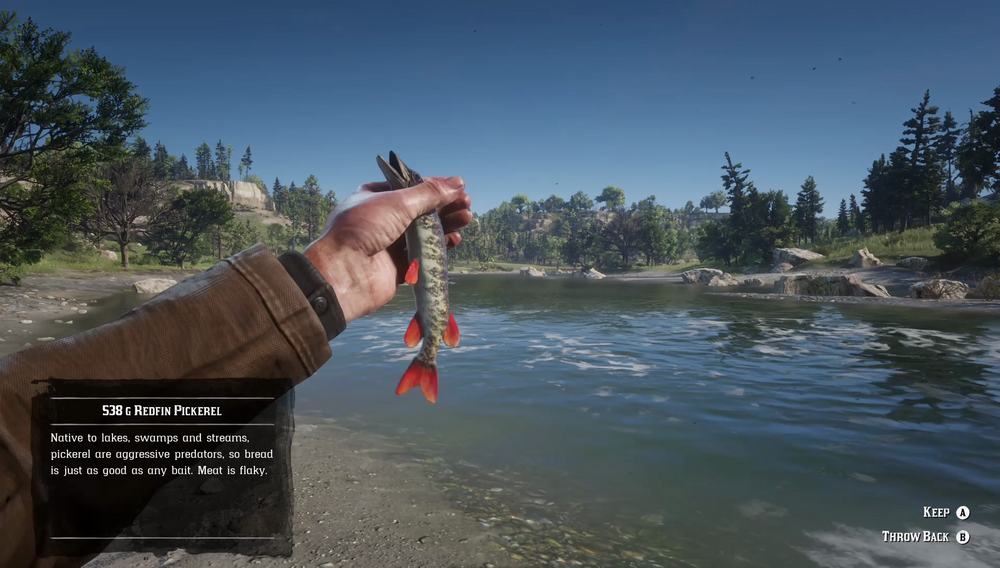

Inhabiting rivers all over the south, Redfin Pickerel is very small and easy to catch. Redfin Pickerel are predators and prefer all food baits, especially bread, over man made lures. They are most active on warm, sunny days. People say that a Legendary Redfin Pickerel dwells somewhere near Thieves' Landing.
Clemens Point, Gill Landing, Lower Dakota River, Mouth of Upper Montana River, Quaker's Cove, Stillwater Creek.
